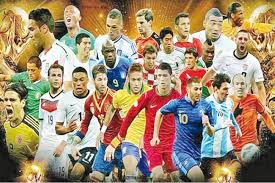
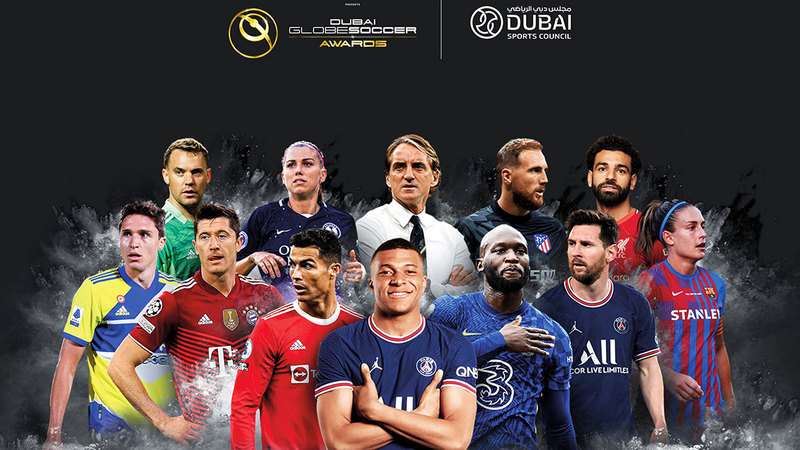

*Football
Football: The Beautiful Game Football, also known as soccer in some countries, is one of the most popular sports in the world. Millions of people play and watch football, making it a unifying game for fans from different cultures and backgrounds. The game is played by two teams, each with eleven players, on a rectangular field with a goal at each end. The main objective is to score goals by getting the ball into the opposing team's net. Players use their feet to control and pass the ball, though goalkeepers are allowed to use their hands within their penalty area. Football is more than just a game. It teaches teamwork, discipline, and perseverance. It also brings people together, whether they are cheering for their favorite team or playing with friends in their neighborhood. Many legendary players, such as Pelé, Diego Maradona, and Lionel Messi, have inspired generations with their skills and passion for the sport. Major tournaments like the FIFA World Cup showcase the best teams and players, attracting billions of viewers worldwide. In conclusion, football is not only a sport but also a source of joy and inspiration for people around the globe. It truly deserves its nickname, "the beautiful game."
 .jpg)
Some famous players throughout history
- 1.Zinedine Zidane
-
- 2.Cristiano Ronaldo
-
- 3.Lionel Messi
1.Zinedine Zidane
Zinedine Zidane, often called "Zizou," is a French football legend known for his incredible skills and leadership on the field. He was born on June 23, 1972, in Marseille, France. Zidane started his professional career with Cannes, then moved to Bordeaux, where he gained attention for his talent. In 1996, Zidane signed with Juventus, one of Italy's top clubs, where he won multiple league titles and earned a reputation as one of the best midfielders in the world. His brilliant play caught the eye of Real Madrid, and in 2001, he joined the Spanish club for a then-record transfer fee. Zidane's time at Real Madrid was filled with success. He won numerous trophies, including the UEFA Champions League in 2002, where he scored one of the most iconic goals in history with a stunning volley. He also helped the French national team win the 1998 FIFA World Cup and UEFA Euro 2000, cementing his legacy as one of the greatest players ever. After retiring from playing in 2006, Zidane transitioned into coaching. He became the head coach of Real Madrid in 2016 and led them to three consecutive Champions League titles, further solidifying his place in football history. Zidane is remembered for his vision, technique, and calm under pressure. His career is a true example of excellence in football.
.jpg)
.jpg)
2.Cristiano Ronaldo
Cristiano Ronaldo, born on February 5, 1985, in Madeira, Portugal, is one of the greatest football players of all time. He began his professional career with Sporting CP in Portugal, where his talent quickly caught the attention of top European clubs. In 2003, Ronaldo signed with Manchester United in England, where he won three Premier League titles, an FA Cup, and his first UEFA Champions League title in 2008. He became known for his incredible speed, skill, and goal-scoring ability. In 2009, he moved to Real Madrid for a then-world record transfer fee. At Real Madrid, Ronaldo reached new heights. He became the club’s all-time top scorer, winning four Champions League titles, two La Liga titles, and numerous other trophies. He also received several Ballon d'Or awards as the best player in the world. In 2018, Ronaldo transferred to Juventus, where he continued his success, winning Serie A titles and further adding to his goal-scoring records. In 2021, he returned to Manchester United for a second spell before moving to Al Nassr in Saudi Arabia in 2023. Ronaldo is known for his incredible work ethic, leadership, and ability to score goals in any situation. He has also had a successful international career with Portugal, winning the UEFA European Championship in 2016 and the UEFA Nations League in 2019. With numerous individual awards, records, and achievements, Cristiano Ronaldo is a football icon and remains one of the most influential athletes in the world.
.jpg)
.jpg)
.jpg)
3.Lionel Messi
Lionel Messi, born on June 24, 1987, in Rosario, Argentina, is widely regarded as one of the greatest football players of all time. He began his career at FC Barcelona, where he spent over 20 years. Messi’s incredible dribbling, vision, and goal-scoring ability made him Barcelona's all-time top scorer. During his time there, Messi won numerous La Liga titles, UEFA Champions League trophies, and individual awards, including multiple Ballon d'Or trophies. In 2021, Messi made a historic move to Paris Saint-Germain (PSG) after Barcelona could not afford to renew his contract. He continued to perform at the highest level, winning Ligue 1 titles and other trophies. Messi has also had a successful international career with Argentina, winning the Copa América in 2021 and the FIFA World Cup in 2022, further cementing his legacy as one of the sport’s all-time greats. Cristiano Ronaldo Cristiano Ronaldo, born on February 5, 1985, in Madeira, Portugal, is another football icon. He began his career with Sporting CP in Portugal before moving to Manchester United in 2003. At Manchester United, Ronaldo won multiple Premier League titles, an FA Cup, and his first UEFA Champions League title in 2008. In 2009, he moved to Real Madrid, where he became the club’s all-time top scorer. Ronaldo won four Champions League titles, two La Liga titles, and several Ballon d'Or awards. In 2018, he moved to Juventus, continuing his success by winning Serie A titles. Ronaldo returned to Manchester United in 2021 before moving to Al Nassr in Saudi Arabia in 2023. Ronaldo is known for his athleticism, goal-scoring ability, and leadership on and off the field. He has also been a key player for Portugal, winning the UEFA European Championship in 2016 and the UEFA Nations League in 2019.
.jpg)
.jpg)
.jpg)